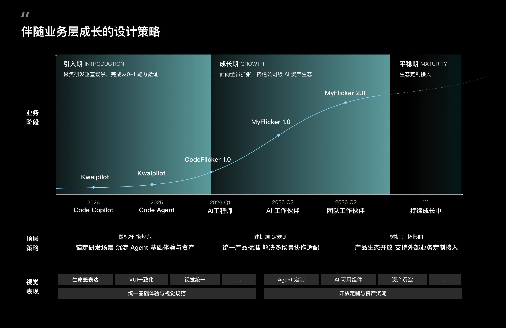
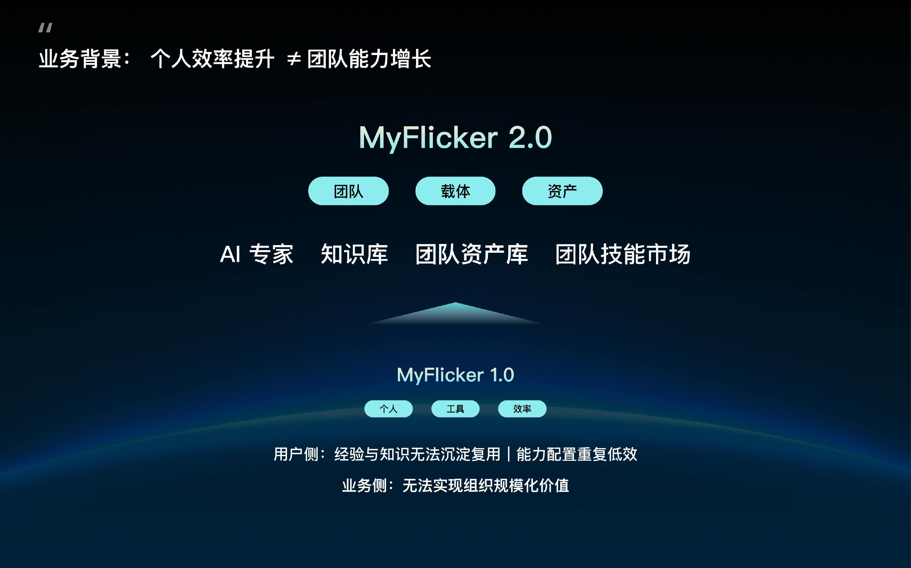
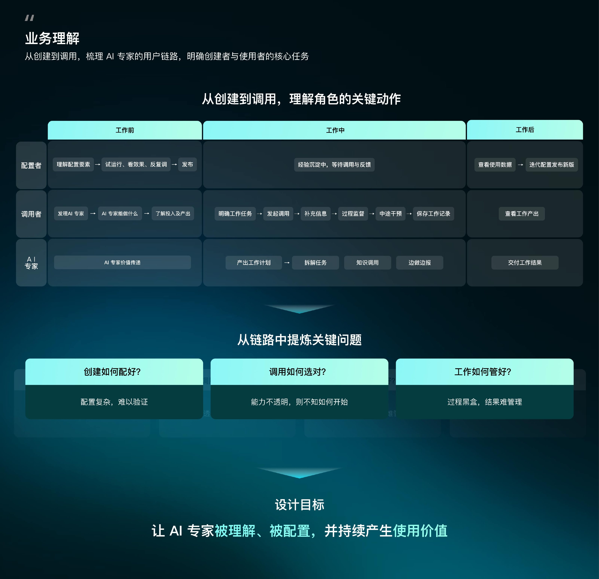
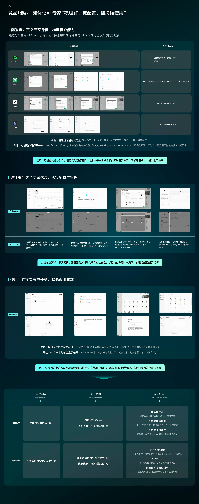
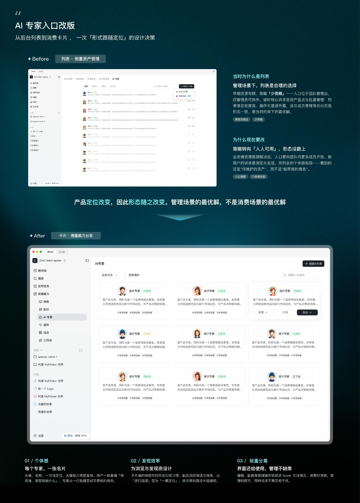
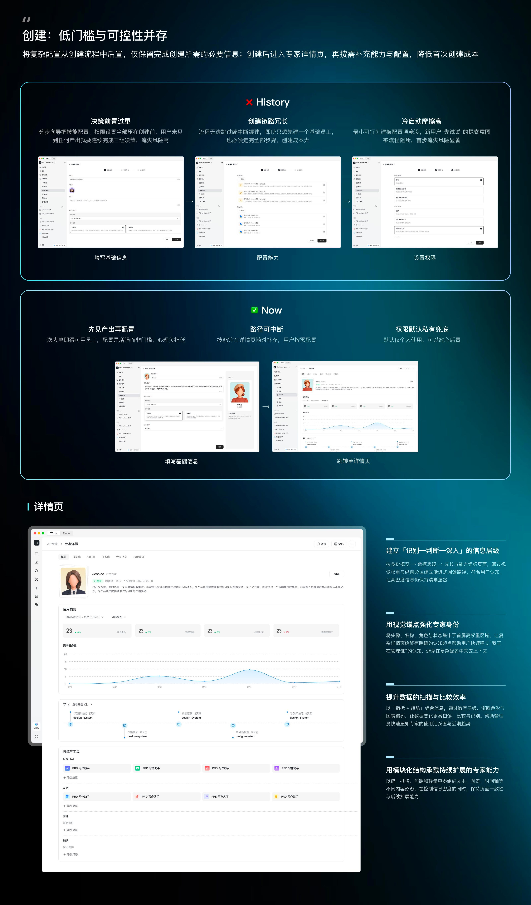
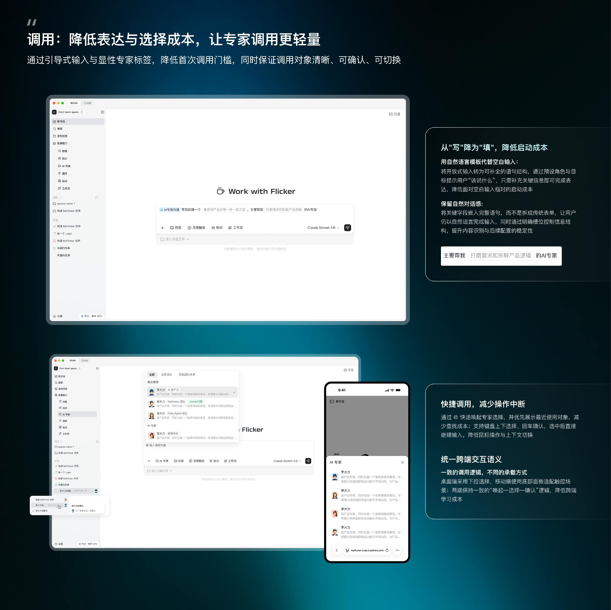
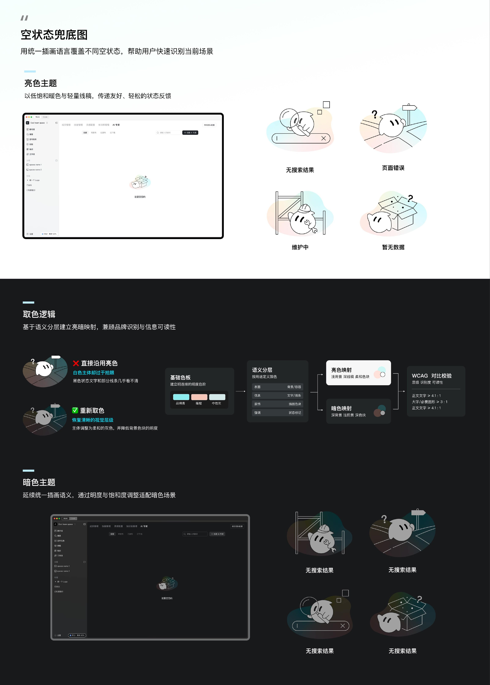

PROJECT 2026
AI 专家体验设计
将抽象 AI 能力转化为可理解、可配置、可管理的界面，让非技术用户也能快速创建并调度数字员工。
MY FLICKER / AI EXPERT
项目详情








PROJECT 2026
将抽象 AI 能力转化为可理解、可配置、可管理的界面，让非技术用户也能快速创建并调度数字员工。
MY FLICKER / AI EXPERT







